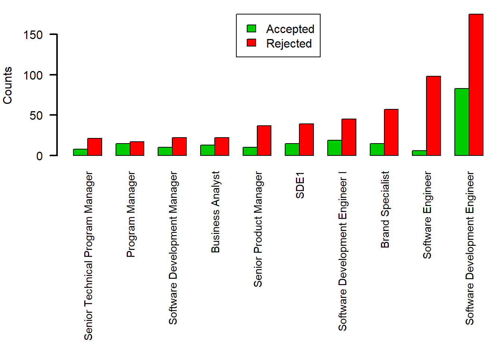
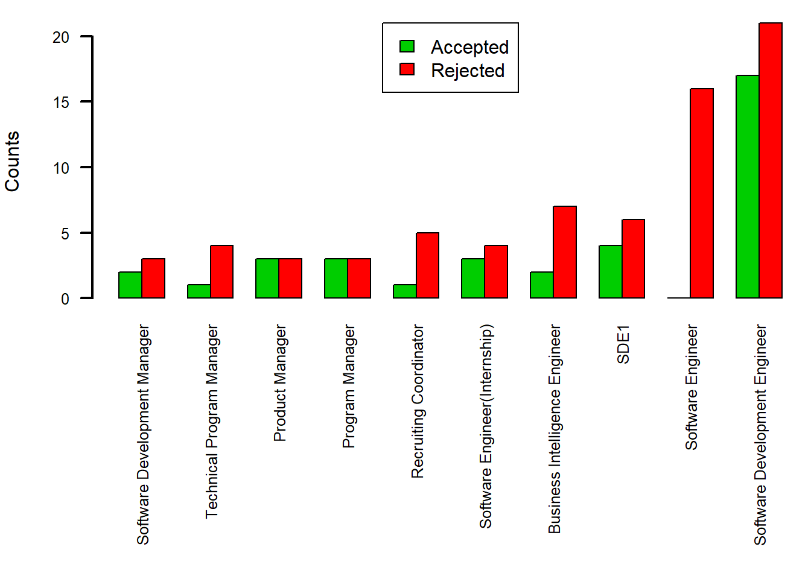
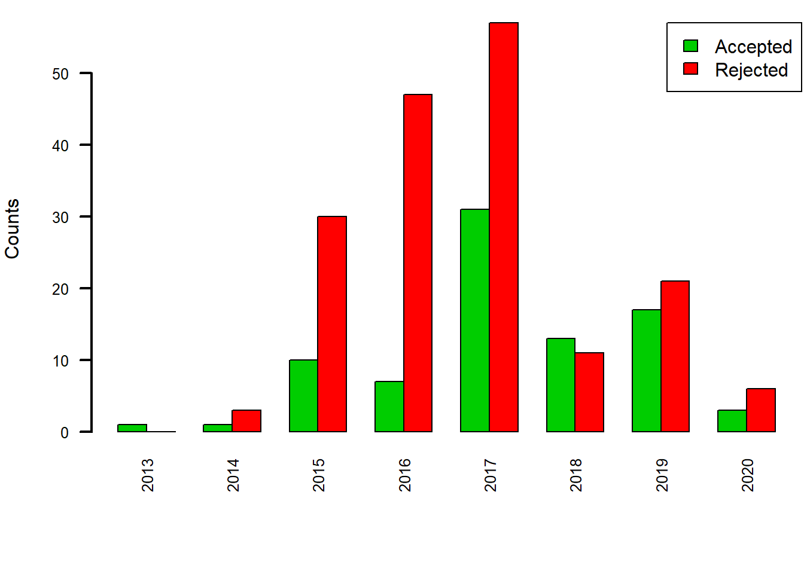
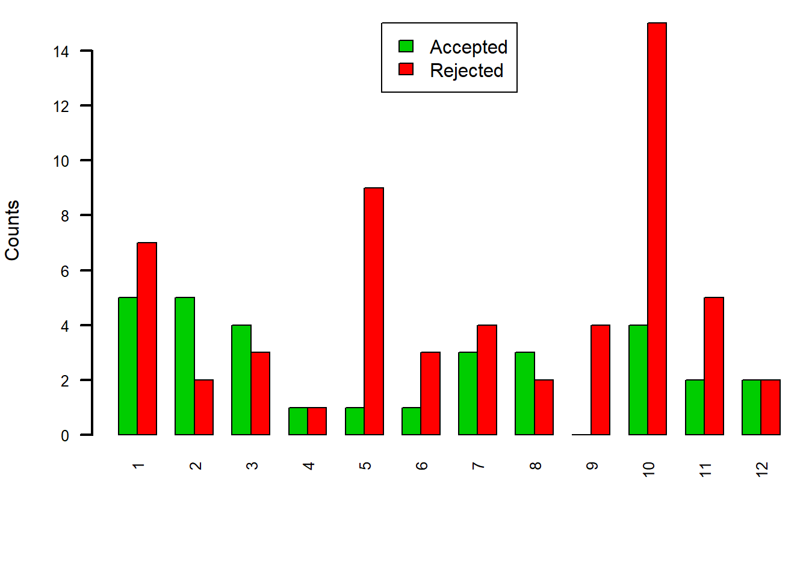

library(xml2)
library(rvest)
library(tibble)
library(purrr)
library(stringr)
library(dplyr)
library(lubridate)##### intreview_date function #####
intreview_date <- function(html){
html %>%
html_nodes(".empReview.cf") %>%
map_df(~list(date = html_nodes(.x,'.date.subtle.small') %>% html_text() %>% {if(length(.) == 0) NA else .})) %>%
unlist(use.names = FALSE)
}
##### review_title function #####
review_title <- function(html){
html %>%
html_nodes(".tbl.fill.reviewHdr") %>%
map_df(~list(title = html_nodes(.x,'.reviewer') %>% html_text() %>% {if(length(.) == 0) NA else .}))
}
##### intreview_location function #####
intreview_location <- function(html){
html %>%
html_nodes('.tbl.fill.reviewHdr') %>%
map_df(~list(location = html_node(.x, '.authorLocation') %>% html_text() %>% {if(length(.) == 0) NA else .}))
}
##### intreview_outcome function #####
intreview_outcome <- function(html){
html %>%
html_nodes(".interviewOutcomes") %>%
html_text()
}
##### interview_question function #####
interview_question <- function(html){
html %>%
html_nodes('.tbl.fill.margTopMd') %>%
map_df(~list(question = html_node(.x, '.interviewQuestions') %>% html_text() %>% {if(length(.) == 0) NA else .}))
}url <- "https://www.glassdoor.com/Interview/Amazon-Interview-Questions-E6036_P%d.htm"
last_page <- 1000
pages_url <- str_c(sprintf(url,1:last_page))
pages_url <- gsub("_P1.htm",".htm",pages_url)
pages_url[1]## [1] "https://www.glassdoor.com/Interview/Amazon-Interview-Questions-E6036.htm"pages_url[last_page]## [1] "https://www.glassdoor.com/Interview/Amazon-Interview-Questions-E6036_P1000.htm"map_df(1:last_page,function(i){
cat(".")
page_html <- read_html (pages_url[i])
Dates <- intreview_date (page_html)
Title <- review_title (page_html)
Location <- intreview_location (page_html)
Outcome <- intreview_outcome (page_html)
Offer_outcome <- str_extract (Outcome,"Accepted|No")
Experience_outcome <- str_extract (Outcome,"Positive|Negative")
Interview_outcome <- str_extract (Outcome,"Difficult|Easy|Average")
Question <- interview_question (page_html)
data.frame(Dates,Title,Location,Offer_outcome,Experience_outcome,Interview_outcome,Question,stringsAsFactors = FALSE)
}) -> result## ........................................................................................................................................................................................................................................................................................................................................................................................................................................................................................................................................................................................................................................................................................................................................................................................................................................................................................................................................................................................................................................office_name <- "Seattle, WA"
result_filter <- result %>% filter(location == office_name)
y <- table(result_filter$title, result_filter$Offer_outcome)
y <- tail(y[order(rowSums(y)),],n=10)
y <- t(y)
par(mar=c(14,4,1,0.1))
barplot(y, col = 3:2, legend = c("Accepted","Rejected"), args.legend = list(x ='top'), ylab = "Counts", cex.axis=1.0, cex.name=0.9, las=2, lwd=2, beside=TRUE)
year <- "2019"
office_name <- "Seattle, WA"
result$Dates <- as.Date(result$Dates," %B %d, %Y")
result_filter_1 <- result %>% filter(location == office_name)
result_filter_2 <- result_filter_1 %>% filter(as.numeric(format(Dates,'%Y')) == year)
y <- table(result_filter_2$title, result_filter_2$Offer_outcome)
y <- tail(y[order(rowSums(y)),],n=10)
y <- t(y)
par(mar=c(12,4,1,0.1))
barplot(y, col = 3:2, legend = c("Accepted","Rejected"), args.legend = list(x ='top'), ylab = "Counts", cex.axis=0.8, cex.name=0.8, las=2, lwd=2, beside=TRUE)
position <- "Software Development Engineer"
office_name <- "Seattle, WA"
result$Dates <- as.Date(result$Dates," %B %d, %Y")
result_filter_1 <- result %>% filter(location == office_name)
result_filter_2 <- result_filter_1 %>% filter(title == position)
y <- table(as.numeric(format(result_filter_2$Dates,'%Y')), result_filter_2$Offer_outcome)
y <- t(y)
par(mar=c(6,4,1,0.1))
barplot(y, col = 3:2, legend = c("Accepted","Rejected"), args.legend = list(x ='topright'), ylab = "Counts", cex.axis=0.8, cex.name=0.8, las=2, lwd=2, beside=TRUE)
year <- "2017"
position <- "Software Development Engineer"
office_name <- "Seattle, WA"
result$Dates <- as.Date(result$Dates," %B %d, %Y")
result_filter_1 <- result %>% filter(location == office_name)
result_filter_2 <- result_filter_1 %>% filter(title == position)
result_filter_3 <- result_filter_2 %>% filter(as.numeric(format(Dates,'%Y')) == year)
y <- table(as.numeric(format(result_filter_3$Dates,'%m')), result_filter_3$Offer_outcome)
y <- t(y)
par(mar=c(6,4,1,0.1))
barplot(y, col = 3:2, legend = c("Accepted","Rejected"), args.legend = list(x ='top'), ylab = "Counts", cex.axis=0.8, cex.name=0.8, las=2, lwd=2, beside=TRUE)
year <- "2017"
month <- "3"
position <- "Software Development Engineer"
office_name <- "Seattle, WA"
result$Dates <- as.Date(result$Dates," %B %d, %Y")
result_filter_1 <- result %>% filter(location == office_name)
result_filter_2 <- result_filter_1 %>% filter(title == position)
result_filter_3 <- result_filter_2 %>% filter(as.numeric(format(Dates,'%Y')) == year)
result_filter_4 <- result_filter_3 %>% filter(as.numeric(format(Dates,'%m')) == month)
y <- data.frame(result_filter_4$Dates, result_filter_4$question)
y ## result_filter_4.Dates
## 1 2017-03-16
## 2 2017-03-18
## 3 2017-03-23
## 4 2017-03-06
## 5 2017-03-29
## 6 2017-03-08
## 7 2017-03-27
## 8 2017-03-05
## result_filter_4.question
## 1 NDA 3 Answers
## 2 NDA 4 Answers
## 3 Coding questions:- Find the longest palindromic substring.- Return the k-closest points to the center of a cartesian plane given an array of coordinates.- Create and return a deep copy of a singly linked list where each node also has an additional pointer to a random node in the list. 2 Answers
## 4 What is the time complexity of your solution? 7 Answers
## 5 In the onsite, questions were only based on the task that was given.Focus on Amazon's leadership principles and try to include them in any answers that you give. 5 Answers
## 6 Questions are easy if you've practised using CTCI & Leetcode 4 Answers
## 7 How to shuffle a deck of cards Answer Question
## 8 strings 2 Answers